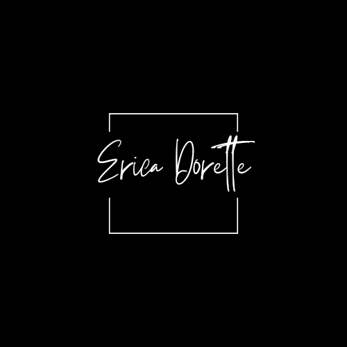

My Resume

Erica Dorette
Dynamic, creative individual with strong administrative and
organisational skills.
Reliable, self-motivated work ethic and the ability to perform effectively in
both independent and team environments.
Work Experience
- Procurement Manager and Project Developer
July 2023 - Current
- Operations Manager - Bon Espoir Estate cc
February 2022 - Current
- Admin Clerk/Bookkeeper - Windien Garage (Pty) Ltd
March 2020 - June 2023
- Bookkeeper - Winterton Shopping Complex (Pty) Ltd
March 2020 - June 2023
Education
- Matric Certificate
2002
St John's Diocesan School for Girls, Pietermaritzburg, KZN
- Certificate of Higher Education
Public Relations,
2005
Durban Varsity College, Durban, KZN
- Diploma
Somatology
2007
Jill Farquharson College, Durban, KZN
Additional Courses and Training
- Microsoft Excel, Word and Power Point
- Sage Pastel and Business Cloud accounting software.
- Plan Ahead Management programme.
Skills
- Sage Pastel and Business Cloud
- Bookkeeping and Recordkeeping
- Account management and
transactions
- Customs processing and
documentation
- Exportation services
- Payroll
- Office management software
- Transport Logistics
Contact me